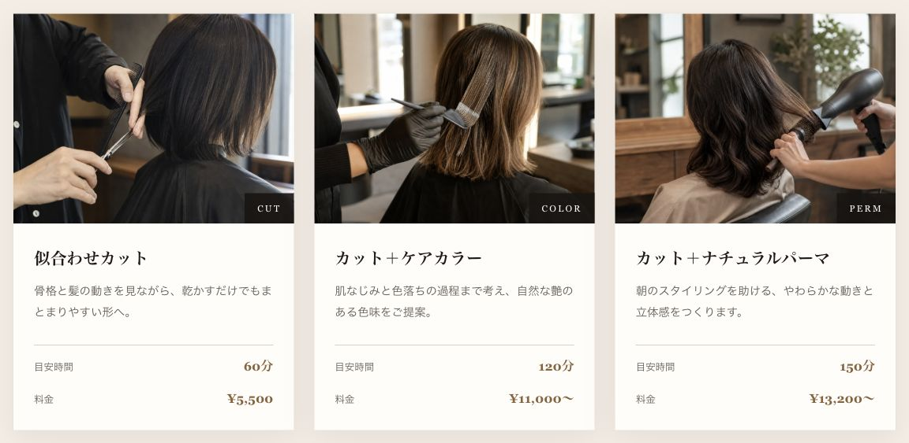

個人美容室のランディングページ
NAGI HAIR
初めての来店に必要な情報を1ページに
料金・所要時間・担当者・来店の流れを1ページに設計。写真でサロンの印象を伝え、初めての人が条件を確認してから予約方法へ進めるLPを制作しました。
自主制作・架空案件 ／ 企画・デザイン・HTML・CSS・JavaScript

ターゲット・ペルソナ
設計上の想定
- ターゲット
- 個人美容室への初回来店を検討している人
- ペルソナ
- SNSで店を知り、料金や担当者を確かめてから相談・予約したい人。

メニューの見せ方
施術メニューを比較
施術写真の下に、メニュー名・説明・目安時間・料金を揃えました。「何をしてもらえるか」と「どれくらい時間がかかるか」を同じ場所で確認できます。
料金のあとには、相談から施術内容の確認までの流れを掲載。メニューを決め切れない人にも、来店時に相談できることを伝えています。
メニューの実画面を見る制作の背景
初回来店をサポート
個人美容室を初めて利用する場面を想定しました。雰囲気が好みでも、料金や所要時間、担当者がわからないと来店を決めにくいと考えました。
最初にサロンの雰囲気を伝え、メニューと料金、初回来店の流れ、スタイリスト、FAQを掲載。予約方法は、検討に必要な情報を読んだあとに確認できる構成です。
落ち着きを伝えるデザイン
施術写真を中心に、アイボリーとブラウン、控えめな金色でまとめました。料金など比較する情報は形式を揃え、担当者の紹介は写真と文章で読ませています。
スマートフォンでは全画面メニューと予約方法への固定ボタンを用意。メニューの開閉には、Escapeキー、フォーカスの移動、閉じた領域の操作無効化を実装しています。
制作範囲
制作概要
- 担当
- 企画・情報設計・デザイン・フロントエンド実装
- 構成
- 1ページ完結型LP
- 技術
- HTML / CSS / JavaScript
- デモ
- 画面とページ内移動を確認できます。LINE・Web予約・電話は接続していません。
自主制作のため、予約数などの運用成果はありません。
実際の画面と操作は、制作デモで確認できます。